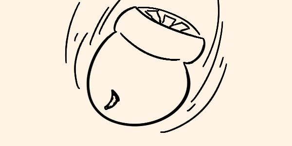

Desde mi escondite en las colinas, vi cómo el cielo ardía. Era imposible no notar los misiles que surcaban el aire, cada uno de ellos cargado con la promesa de destrucción total. Podía escuchar, incluso desde mi refugio, el sonido ominoso del estruendo que precedía a cada explosión. El gobierno nos dijo que lo que estaba por suceder salvaría a los que quedábamos, que la Tierra sería purgada del horror que emergió en Pelstrot. Me aferré a esa promesa como muchos otros, con la esperanza de que el fin del parásito negro estuviera finalmente cerca.
La primera bomba impactó al amanecer, y el cielo se iluminó con un destello cegador. Era como si el sol hubiera decidido aterrizar en la Tierra, borrando todo lo que se encontraba en su camino. La onda expansiva sacudió mi refugio, y sentí cómo el suelo temblaba bajo mis pies. El calor, incluso a kilómetros de distancia, era sofocante. Sabía que ese infierno había caído sobre Pelstrot y sus ciudades condenadas, y, por un momento, pensé que quizás la pesadilla había terminado. Sin embargo, lo que vi después cambió todo.
Cuando el polvo comenzó a asentarse, lo que quedaba de las ciudades ardidas empezó a emerger lentamente en el horizonte. En lugar de ruinas humeantes y un silencio muerto, algo peor surgió de entre los escombros. Las criaturas infectadas, que antes ya parecían monstruos, ahora eran abominaciones retorcidas, deformadas y alteradas. La radiación no las había destruido; las había cambiado. Aquellas cosas, aquellas sombras de lo que alguna vez fueron humanos, comenzaron a moverse de nuevo, pero esta vez con una ferocidad y fuerza renovadas.
Al principio, me negué a creer lo que estaba viendo. Los bombardeos nucleares debían haber acabado con ellas, desintegrado cualquier rastro de vida. Pero en cambio, estas criaturas mutadas se alzaban sobre las ruinas, sus cuerpos fusionados con esa sustancia negra que parecía haber crecido más aún con la radiación. Los gritos que se escuchaban en la distancia no eran de dolor, sino de algo mucho peor: de una hambre insaciable que no entendía de límites.
En ese momento, la desesperanza fue absoluta. Habíamos puesto todas nuestras esperanzas en las bombas, en esa medida extrema que destruiría todo para darnos una oportunidad. Pero nada había salido como se esperaba. Las explosiones solo habían transformado a nuestros enemigos en algo más fuerte, más aterrador. Su piel, ahora endurecida y quemada, brillaba con una negrura antinatural, casi metálica bajo los rayos de luz que se filtraban a través del humo y la ceniza. No eran solo más grandes; eran más rápidas, más inteligentes, como si la misma energía que pretendía destruirlas hubiera sido absorbida por sus cuerpos mutados.
Desde mi escondite, observé cómo avanzaban, sus movimientos eran mucho más precisos que antes, y parecía que incluso se organizaban. La negrura del parásito se había extendido aún más sobre sus cuerpos, cubriendo partes que antes aún eran humanas. Lo que más me horrorizó fue notar que, a pesar de sus deformaciones, había algo en sus ojos que aún recordaba lo que alguna vez fueron. Había restos de humanidad allí, enterrados bajo capas de carne mutada y ese parásito negro que controlaba cada uno de sus movimientos. No pude apartar la mirada. Era como si los que alguna vez fueron humanos lucharan por resurgir, solo para ser reprimidos por esa cosa oscura que ahora los dominaba.
Después de los bombardeos, muchos pensamos que podríamos acercarnos a las ciudades, que tal vez habría algo que rescatar o supervivientes escondidos entre las ruinas. Algunos se aventuraron hacia el infierno radiactivo, con la esperanza de encontrar a familiares o amigos que hubieran sobrevivido. Yo también pensé en bajar, en buscar respuestas entre los escombros de Pelstrot, pero las criaturas me convencieron de lo contrario. Aquellos que descendieron a la zona cero no regresaron. Los vimos, desde lejos, siendo cazados por esas monstruosidades que parecían más bestias que humanas. Los gritos se desvanecieron rápidamente, como si fueran tragados por la oscuridad misma.
Nos quedamos allí, en silencio, viendo cómo se desarrollaba la tragedia, sin poder hacer nada. Cada explosión nuclear que había iluminado el horizonte fue, en el fondo, un monumento a nuestro fracaso. La Unión de la Nueva Orden había sacrificado todo lo que quedaba de Pelstrot y sus habitantes para detener al parásito, pero todo lo que lograron fue acelerar la transformación de los infectados. El plan que se suponía salvaría lo que quedaba de la humanidad solo sirvió para empujarnos más cerca del abismo.
Ahora, mientras las criaturas mutadas patrullan las ruinas de lo que fue Pelstrot, nos preguntamos si realmente valió la pena. Si el precio de usar esas armas devastadoras fue demasiado alto. ¿Habríamos estado mejor buscando otra solución? ¿O simplemente estábamos condenados desde el momento en que el parásito emergió por primera vez? Las dudas me carcomen, incluso ahora que las criaturas parecen alejarse, moviéndose hacia zonas que aún no han sido bombardeadas, como si buscaran algo que yo no entiendo.
No tengo respuestas. Solo tengo preguntas y el sonido incesante del viento que arrastra cenizas y polvo radiactivo. La humanidad ha perdido su esencia en este enfrentamiento contra lo desconocido, y cada día que pasa se siente como un eco de lo que alguna vez fuimos, de lo que podríamos haber sido.
Las criaturas no son lo único que ha cambiado. Los pocos supervivientes que quedamos también hemos mutado, no físicamente, sino en nuestra forma de pensar y actuar. Ahora somos cazadores, siempre en movimiento, siempre alerta. No hay tiempo para la compasión o la nostalgia. El mundo está muerto, y solo queda la lucha constante por sobrevivir. Las bombas nucleares no nos salvaron, solo nos mostraron que la esperanza es tan frágil como la vida misma.
Me pregunto si alguien, en algún lugar, tendrá la fuerza para encontrar la verdadera salvación. O si simplemente nos quedaremos aquí, en este paisaje devastado, esperando a que la oscuridad nos consuma. La vida sigue, pero a veces, incluso respirar parece un acto de pura terquedad.
Y aún, en medio de la desolación, me pregunto si realmente valió la pena intentarlo.
